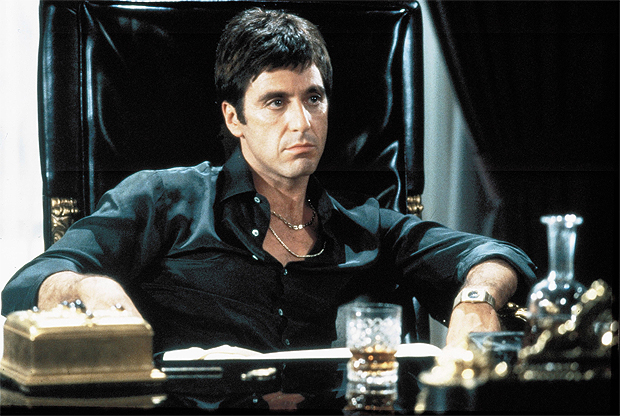
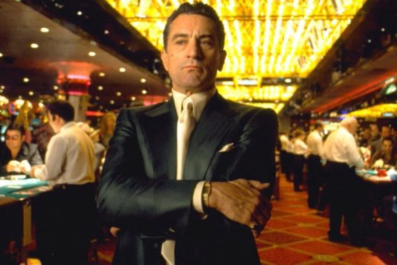
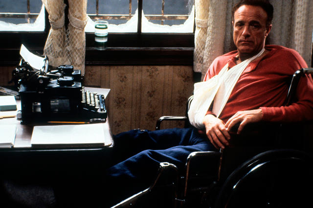

El Padrino (1972)
Don Vito Corleone es el respetado y temido jefe de una de las
cinco familias de la mafia de Nueva York en los años 40. Dos de
sus hijos participan en las actividades ilícitas, mientras que
Michael, el menor de sus hijos, está distanciado del negocio
familiar.
Un atentado contra Don Vito orilla a Michael a cuidar de su padre
y tomar las riendas de los negocios.
Más información

Caracortada (Scarface) (1983)
Tony Montana es un cubano frío, ambicioso e implacable que emigra
a los Estados Unidos con su amigo Manny Rivera, e inicia una
carrera delictiva con el objetivo de acceder a la cúpulade una
organizacion de narcos.
Más información

Perfume de Mujer (1992)
Esta pelicula trata sobre el estudiante Charlie Simms, un joven
becado por una prestigiosa escuela preparatoria, Charlie
consigue un peculiar empleo de fin de semana, para poder viajar con sus
padres por motivo de la navidad. El trabajo consiste en ser
acompañante de un oficial retirado del ejército de los Estados
Unidos: el teniente coronel Frank Slade, un hombre ciego y amargado
que ha perdido el sentido de la vida.
Más información

Casino (1995)
Las Vegas, año 1973. Sam "Ace" Rothstein, un profesional de las
apuestas, eficaz director de un importante casino que pertenece
a un grupo de mafiosos. Su misión es controlar el funcionamiento
del negocio y garantizar que la corriente de dinero que va a
parar a manos de sus jefes siga fluyendo.
Las Vegas es un lugar ideal para millonarios y políticos, pero
es también lugar de paso de prestamistas, traficantes de drogas
y matones. Un día el violento Nicky Santoro, al que sus jefes
han encargado que cuide de Sam, llega a Las Vegas con la
intención de quedarse.
Más información

Buenos Muchachos (1990)
Henry Hill, hijo de padre irlandés y madre siciliana, vive
en Brooklyn y se siente fascinado por la vida que llevan
los gángsters de su barrio, donde la mayoría de los vecinos
son inmigrantes. Paul Cicero, el patriarca de la familia
Pauline, es el protector del barrio. A los trece años, Henry
decide abandonar la escuela y entrar a formar parte de la
organización mafiosa como chico de los recados; muy pronto
se gana la confianza de sus jefes, gracias a lo cual irá
subiendo de categoría.
Más información

Taxi Driver (1976)
Para sobrellevar el insomnio crónico que sufre desde su
regreso de Vietnam, Travis Bickle trabaja como taxista
nocturno en Nueva York. Es un hombre poco sociable que
apenas tiene contacto con los demás, se pasa los días en
el cine y arriba del taxi. Pero lo que realmente obsesiona
a Travis es comprobar cómo la violencia, la sordidez y la
desolación dominan la ciudad. Y un día decide pasar a la acción.
Más información

Érase una vez en América (1984)
Principios del siglo XX. David Aaronson, un pobre joven
judío, conoce en los suburbios de Manhattan a Max, otro
joven de origen hebreo dispuesto a llegar lejos por cualquier
método. Entre ellos nace una gran amistad y, con otros amigos,
forman una banda que prospera rápidamente, llegando a
convertirse, en los tiempos de la Ley Seca (1920-1933), en
unos importantes mafiosos.
Más información

Misery (1990)
Paul Shledon es un escritor que sufre un grave accidente y recobra
el conocimiento en una apartada casa en la que vive una misteriosa mujer,
corpulenta y de extraño carácter. Se trata de una antigua enfermera, involucrada
en varias muertes misteriosas ocurridas en diversos hospitales. Fanática de un
personaje de una serie de libros que él ha decido dejar de escribir, está
dispuesta a hacer todo lo necesario para "convencerlo" de que retome la escritura.
Más información

Sueño de fuga (1994)
A finales de la década de los años 40, en Maine, cuando Andrew
Dufresne, vicepresidente de un importante banco de la ciudad, es juzgado y
condenado por el crimen de su esposa y el amante de la misma. A pesar de
luchar e insistir por su inocencia, las pruebas son suficiente motivo para ser
condenado a dos cadenas perpetuas, en la temida prisión estatal de Shawshank.
En su llegada a la prisión Andy Descubre lo brutal del ambiente,forma una
amistad con Red, un prisionero que es capaz de conseguir cualquier cosa.
Con el pasar del tiempo Andy sigue insistiendo en su inocencia, Red Descubre
que el antiguo banquero no ha perdido algo en su tiempo en la prision: la
esperanza.
Más información

La ventana indiscreta (1954)
Un fotógrafo, sentado en una silla de ruedas y con una pierna enyesada,
espía a los vecinos y es testigo de un asesinato.
Más información